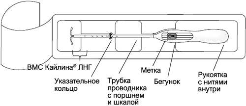
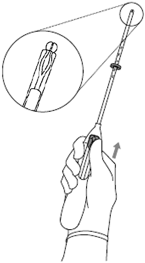
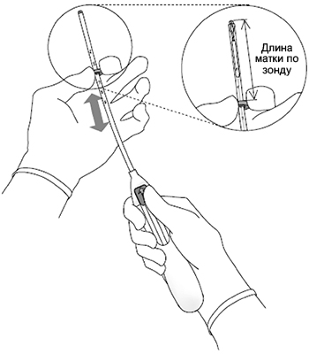
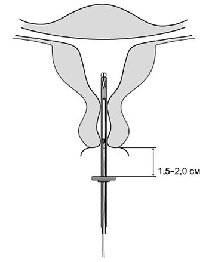
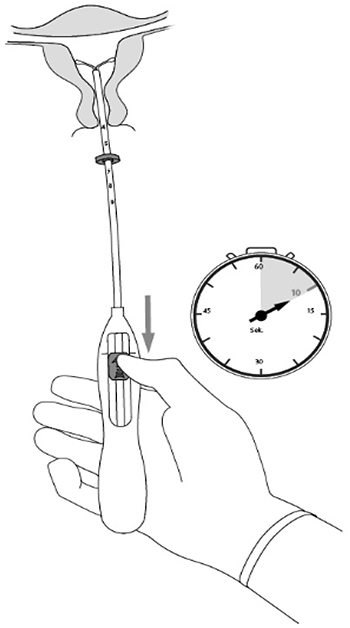
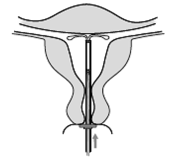
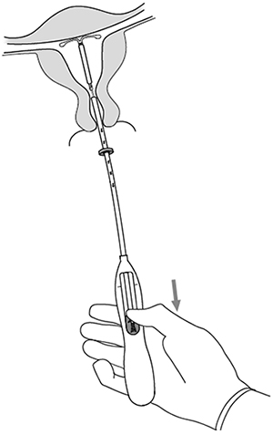
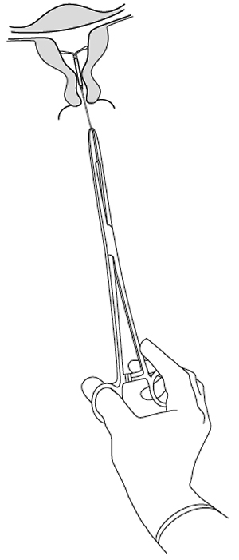

|
 |
| КАЙЛИНА® ЛНГ (KYLEENA LNG) levonorgestrel система внутриматочн. терапевтическая | |||||||||||||||||||||||||||||||||||||||||||||||||||||||||||
|
Клинико-фармакологическая группа: Гестаген Номер и дата регистрации: ЛП-007048 от 27.05.21 Код ATX: G02BA03 |
Владелец регистрационного удостоверения: зарегистрировано Представительство: | ||||||||||||||||||||||||||||||||||||||||||||||||||||||||||
Форма выпуска, состав и упаковка Система внутриматочная терапевтическая (ВМС); продукт состоит из проводника с серым фланцем и системы внутриматочной с левоноргестрелом, установленной на конце проводника; система состоит из резервуара с веществом от почти белого до желтоватого цвета, покрытого полупрозрачной мембраной, установленного на вертикальном стержне Т-образного корпуса; Т-образный корпус имеет петлю на одном конце вертикального стержня и два плеча на другом конце; к верхнему концу вертикального стержня прикреплено серебряное кольцо; к петле прикреплены нити синего цвета для удаления системы; система должна быть без видимых дефектов; размеры ВМС: 28×30×1.55 мм.
Вспомогательные вещества: сердцевина из полидиметилсилоксанового эластомера, мембрана из полидиметилсилоксанового эластомера, наполненного кремнием, содержащая 30-40% масс кремния диоксида коллоидного безводного. Другие компоненты – Т-образный корпус для системы внутриматочной терапевтической с левоноргестрелом из полиэтилена, содержащий 20-24% масс бария сульфата, тонкая нить полипропиленовая синего цвета (полипропилен, окрашенный фталоцианином меди (CI 74160) ≤0.5% масс.), серебряный профиль 0.5×0.8 мм. ВМС (1) - пакеты стерильные из пленки из полиэтилентерефталата (1) - коробки картонные (1) - пленка прозрачная. | |||||||||||||||||||||||||||||||||||||||||||||||||||||||||||
| |||||||||||||||||||||||||||||||||||||||||||||||||||||||||||
Описание препарата основано на официально утвержденной инструкции по применению и утверждено компанией-производителем для издания 2023 г. | |||||||||||||||||||||||||||||||||||||||||||||||||||||||||||
Фармакологическое действие |
Фармакокинетика |
Показания |
Режим дозирования |
Побочное действие |
Противопоказания |
Беременность и лактация |
Особые указания |
Передозировка |
Лекарственное взаимодействие |
Условия хранения и сроки годности |
Условия реализации
Фармакологическое действие
Фармакодинамика Фармакодинамические эффекты Внутриматочная система (ВМС) Кайлина® ЛНГ, высвобождающая левоноргестрел, оказывает, главным образом, местное гестагенное действие. Гестаген левоноргестрел высвобождается непосредственно в полости матки. Высокая концентрация левоноргестрела в эндометрии способствует снижению чувствительности его эстрогенных и прогестероновых рецепторов, делая эндометрий относительно невосприимчивым к циркулирующему эстрадиолу и оказывая сильное антипролиферативное действие. При применении ВМС Кайлина® ЛНГ наблюдаются морфологические изменения в эндометрии и слабая местная реакция на присутствие в матке инородного тела. Увеличение вязкости секрета шейки матки предупреждает проникновение сперматозоидов в полость матки. Локальные изменения в матке и маточных трубах подавляют подвижность и функцию сперматозоидов, предотвращая оплодотворение. В клинических исследованиях ВМС Кайлина® ЛНГ овуляция наблюдалась у большинства женщин в исследуемой подгруппе: у 23 из 26 женщин в 1-й год после введения ВМС, у 19 из 20 женщин - в течение 2-го года и у 16 из 16 женщин - во время 3-го года применения. В течение 4-го года после введения ВМС овуляция наблюдалась у одной женщины, оставшейся в данной подгруппе; на 5-й год применения ни одной женщины в подгруппе не осталось. Клиническая эффективность и безопасность Контрацептивная эффективность ВМС Кайлина® ЛНГ оценивалась в клиническом исследовании с участием 1452 женщин в возрасте 18-35 лет, включая 574 (39.5%) нерожавших женщин, у 482 женщин из них (84.0%) до введения ВМС Кайлина® ЛНГ не было беременности. Индекс Перля (показатель, отражающий число беременностей у 100 женщин в течение года) составил приблизительно 0.16 в течение 1 года (95% доверительный интервал 0.02-0.58) и 0.29 в течение 5 лет (95% доверительный интервал 0.16-0.50). Частота неэффективности метода (включающая также беременность, возникшую на фоне невыявленной экспульсии или перфорации) составила примерно 0.2% через 1 год, а кумулятивная частота неэффективности метода в течение 5 лет составила 1.4%. Применение левоноргестрел-высвобождающих ВМС не оказывает влияния на фертильность в будущем. Результаты исследования при применении ВМС Кайлина® ЛНГ в течение 5 лет свидетельствуют о том, что у 116 женщин из 163 (71.2%), желающих иметь ребенка, беременность наступает в течение 12 месяцев после удаления системы. На фоне ВМС Кайлина® ЛНГ изменение характера менструаций является результатом прямого действия левоноргестрела на эндометрий и может не отображать овариального цикла. Четкой взаимосвязи между развитием фолликулов, овуляцией и концентрацией эстрадиола и прогестерона в плазме крови у женщин с различным характером менструаций не прослеживается. В первые месяцы после установки ВМС Кайлина® ЛНГ во время процесса подавления пролиферации эндометрия может наблюдаться усиление кровотечений/кровянистых выделений из полости матки. Последующее выраженное подавление эндометрия ведет к уменьшению продолжительности и объема менструальных кровотечений у женщин, применяющих ВМС Кайлина® ЛНГ. Скудные менструации часто переходят в олигоменорею или аменорею. При этом функция яичников и концентрация эстрадиола в плазме крови остаются нормальными, даже при развитии аменореи у пользователей ВМС Кайлина® ЛНГ. Фармакокинетика
Действующее вещество ВМС Кайлина® ЛНГ - левоноргестрел. Левоноргестрел высвобождается напрямую в полость матки. Кривая высвобождения левоноргестрела in vivo характеризуется резким начальным снижением, которое постепенно замедляется, приводя к небольшим изменениям через 1 год, до конца планируемого 5-летнего периода использования. Ожидаемая скорость высвобождения левоноргестрела in vivo для разных временных точек приведена в таблице 1. Таблица 1. Ожидаемая скорость высвобождения левоноргестрела in vivo, основанная на данных остаточного содержания ex vivo
Всасывание Выделение левоноргестрела в полость матки начинается сразу после введения ВМС. Более чем 90% выделенного левоноргестрела имеет системную доступность. Cmax левоноргестрела в сыворотке крови достигается в течение первых 2 недель после введения ВМС Кайлина® ЛНГ. Через 7 дней после введения ВМС Кайлина® ЛНГ концентрация левоноргестрела составила 162 пг/мл (5-й/95-й процентиль: 81-308 пг/мл). Затем происходит постепенное снижение концентрации левоноргестрела в сыворотке крови, которая достигает среднего уровня 91 пг/мл (5-й/95-й процентиль: 47-170 пг/мл) через 3 года и 83 пг/мл (5-й/95-й процентиль: 45-153 пг/мл) через 5 лет. При применении левоноргестрел-высвобождающей ВМС высокая местная экспозиция действующего вещества в полости матки приводит к высокому градиенту концентрации в направлении от эндометрия к миометрию (концентрация левоноргестрела в эндометрии превышает его концентрацию в миометрии более чем в 100 раз) и низким концентрациям левоноргестрела в сыворотке крови (концентрация левоноргестрела в эндометрии превышает его концентрацию в сыворотке крови более чем в 1000 раз). Распределение Левоноргестрел неспецифически связывается с альбумином сыворотки крови и специфично с глобулином, связывающим половые гормоны (ГСПГ). Менее 2% циркулирующего левоноргестрела представлено в виде свободного стероида. Левоноргестрел связывается с высокой степенью аффинности с ГСПГ. Соответственно, изменения в концентрации ГСПГ в сыворотке крови приводят к повышению (при более высоких концентрациях ГСПГ) или снижению (при более низких концентрациях ГСПГ) общей концентрации левоноргестрела в сыворотке крови. Концентрация ГСПГ в среднем снижается примерно на 30% в течение первых 3 месяцев после установки ВМС Кайлина® ЛНГ и остается относительно стабильной на протяжении 5-летнего периода применения. Средний кажущийся Vd левоноргестрела составляет около 106 л. Метаболизм Левоноргестрел в значительной степени метаболизируется. Наиболее важными путями метаболизма являются редукция Δ4-3-оксогруппы и гидроксилирование в положениях 2α, 1β и 16β с последующей конъюгацией. CYP3A4 является основным изоферментом, участвующим в окислительном метаболизме левоноргестрела. Имеющиеся данные in vitro позволяют предположить, что реакции биотрансформации, опосредованные CYP, могут быть незначительными для левоноргестрела по сравнению с редукцией и конъюгацией. Выведение Общий клиренс левоноргестрела из плазмы крови составляет приблизительно 1.0 мл/мин/кг. В неизмененном виде левоноргестрел выводится лишь в следовых количествах. Метаболиты выводятся через кишечник и почками в примерном соотношении 1:1. Т1/2 составляет примерно 1 сут. Линейность/нелинейность Фармакокинетика левоноргестрела зависит от концентрации ГСПГ, на которую влияют эстрогены и андрогены. Снижение концентрации ГСПГ, приводящее к снижению общей концентрации левоноргестрела в сыворотке крови, указывает на нелинейный характер фармакокинетики левоноргестрела в отношении времени. При этом не ожидается влияния на эффективность, учитывая, главным образом местное воздействие ВМС Кайлина® ЛНГ. Режим дозирования
ВМС Кайлина® ЛНГ вводится в полость матки и сохраняет эффективность в течение 5 лет. Скорость высвобождения левоноргестрела in vivo сначала составляет около 15.3 мкг/сут, снижается до 9.8 мкг/сут через 1 год и примерно до 7.4 мкг/сут - через 5 лет. Средняя скорость высвобождения левоноргестрела примерно 9.0 мкг/сут на протяжении 5 лет. Введение и удаление/замена ВМС Перед введением ВМС Кайлина® ЛНГ женщину следует проинформировать об эффективности, возможных рисках и нежелательных реакциях при применении ВМС. Следует провести общее и гинекологическое обследование, включающее обследование органов малого таза и молочных желез. При необходимости по решению врача следует провести исследование мазка из шейки матки и влагалища. Следует исключить беременность и заболевания, передающиеся половым путем, воспалительные заболевания органов малого таза должны быть полностью излечены. Рекомендуется, чтобы ВМС Кайлина® ЛНГ вводилась только врачом, имеющим опыт введения ВМС и/или прошедшим обучение по процедуре введения ВМС Кайлина® ЛНГ. ВМС Кайлина® ЛНГ следует устанавливать в полость матки в течение 7 дней после начала менструации. ВМС Кайлина® ЛНГ может быть заменена новой системой в любой день менструального цикла. ВМС Кайлина® ЛНГ также может быть установлена сразу после аборта в I триместре беременности при условии отсутствия воспалительных заболеваний половых органов. Введение ВМС Кайлина® ЛНГ в послеродовом периоде следует отложить до полной инволюции матки и проводить не ранее чем через 6 недель после родов. При продолжительной субинволюции матки необходимо исключить послеродовый эндометрит и другие причины значительной задержки инволюции и отложить решение о введении ВМС до завершения инволюции матки. Рекомендуется рассмотреть вопрос об установке ВМС через 12 недель после родов. При затруднении введения системы и/или при возникновении сильной боли или кровотечения во время или после введения ВМС Кайлина® ЛНГ, следует немедленно предпринять необходимые меры для исключения перфорации матки, такие как физикальное обследование и УЗИ. Только физикальное обследование не является достаточным для исключения неполной перфорации стенки матки. ВМС Кайлина® ЛНГ можно отличить от других ВМС по серебряному кольцу, визуализируемому при УЗИ, и нитям для удаления системы синего цвета. Рамка Т-образного корпуса ВМС Кайлина® ЛНГ содержит бария сульфат, что делает ее видимой при рентгенографическом исследовании. ВМС Кайлина® ЛНГ удаляют путем аккуратного потягивания щипцами за нити. Если нити не видны, а система находится в полости матки по данным УЗИ, то ее можно удалить с помощью узких хирургических щипцов. При этом может потребоваться расширение канала шейки матки или хирургическое вмешательство. Систему следует удалять не позднее окончания 5 лет после установки. Если женщина желает продолжить использование данного метода контрацепции, новую ВМС можно ввести сразу же после удаления предыдущей. Если беременность нежелательна, систему следует удалить в течение 7 дней от начала менструации, при наличии регулярного менструального цикла у женщины. Если система удалена в другие дни менструального цикла или у женщины менструальный цикл не регулярный, а в течение предшествующей недели был половой контакт, то есть риск возникновения беременности. Для обеспечения непрерывной контрацепции следует незамедлительно установить новую систему или начать применение альтернативного метода контрацепции. После удаления ВМС Кайлина® ЛНГ систему следует проверить на целостность. Применение ВМС в особых клинических группах Дети и подростки до 18 лет Применение ВМС Кайлина® ЛНГ у девочек-подростков возможно только после установления менструального цикла. Женщины пожилого возраста ВМС Кайлина® ЛНГ не показана для применения у женщин в постменопаузе. Пациентки с нарушением функции печени ВМС Кайлина® ЛНГ не изучалась у женщин с нарушением функции печени. ВМС Кайлина® ЛНГ противопоказана у женщин с острыми заболеваниями печени или опухолями печени (см. также раздел "Противопоказания"). Пациентки с нарушением функции почек ВМС Кайлина® ЛНГ не изучалась у женщин с нарушением функции почек. Способ применения Система должна устанавливаться врачом при соблюдении правил асептики. ВМС Кайлина® ЛНГ поставляется в стерильной упаковке, с интегрированным проводником для введения, позволяющим установку одной рукой. Упаковку вскрывают только перед установкой ВМС. Нельзя повторно стерилизовать. ВМС Кайлина® ЛНГ предназначена только для однократного применения. Нельзя использовать систему, если пакет поврежден или открыт. Нельзя устанавливать систему после истечения срока годности, указанного на картонной упаковке и пакете. Любой неиспользованный продукт или его отходы следует уничтожить в соответствии с локальными требованиями. В упаковке ВМС Кайлина® ЛНГ содержится памятка для пользователя. После установки системы необходимо заполнить памятку и выдать ее женщине. Подготовка к введению 1. Провести гинекологическое обследование для установления размера и положения матки и для исключения любых признаков острых генитальных инфекций или других противопоказаний для установки ВМС Кайлина® ЛНГ. В случае сомнений в отношении наличия беременности необходимо провести тест на беременность. 2. Следует визуализировать шейку матки с помощью зеркал и полностью обработать шейку матки и влагалище подходящим раствором антисептика. 3. При необходимости воспользоваться помощью ассистента. 4. Следует захватить переднюю губу шейки матки держателем или другими щипцами, чтобы зафиксировать матку. В случае если матка находится в положении ретрофлексии, может быть более правильным захватить заднюю губу шейки матки. Осторожной тракцией щипцами выпрямить цервикальный канал. Щипцы должны находиться в этом положении в течение всего времени введения ВМС Кайлина® ЛНГ при осторожном оттягивании шейки матки навстречу вводимому инструменту. 5. Осторожно продвигая маточный зонд через цервикальный канал ко дну матки, определить направление и длину полости матки (расстояние от наружного зева шейки матки до дна матки), исключить любые признаки аномалий в полости матки (например, наличие перегородки или субмукозных миоматозных узлов) или ранее введенные и не удаленные внутриматочные контрацептивы. При затруднениях рекомендуется расширение канала, для этого следует рассмотреть применение обезболивающих препаратов и/или парацервикальной блокады. Введение 1. Вскрыть полностью стерильную упаковку (рисунок 1). После этого все манипуляции следует проводить с использованием стерильных инструментов и в стерильных перчатках.  Рис. 1 2. Отодвинуть бегунок вперед по направлению стрелки в самое дальнее положение для того, чтобы втянуть ВМС Кайлина® ЛНГ внутрь трубки-проводника (рисунок 2).  Рис. 2 Важная информация. Не перемещать бегунок по направлению вниз, т.к. это может привести к преждевременному высвобождению ВМС Кайлина® ЛНГ. Если это произойдет, систему будет невозможно вновь поместить внутрь проводника. 3. Удерживая бегунок в самом дальнем положении, установить верхний край указательного кольца в соответствии с измеренным зондом расстоянием от наружного зева шейки матки до дна матки (рисунок 3).  Рис. 3 4. Продолжая удерживать бегунок в самом дальнем положении, следует продвигать проводник осторожно через цервикальный канал в матку до тех пор, пока указательное кольцо не окажется на расстоянии около 1.5-2 см от шейки матки (рисунок 4).  Рис. 4 Важная информация. Не следует продвигать проводник с усилием. При необходимости следует расширить цервикальный канал. 5. Держа проводник неподвижно, отодвинуть бегунок до метки для раскрытия горизонтальных плеч ВМС Кайлина® ЛНГ (рисунок 5). Подождать 5-10 секунд, пока горизонтальные плечи полностью не раскроются.  Рис. 5 6. Осторожно продвигать проводник внутрь в сторону дна матки до тех пор, пока указательное кольцо не соприкоснется с шейкой матки. Система должна находиться у дна матки (рисунок 6).  Рис. 6 7. Удерживая проводник в том же положении, высвободить ВМС Кайлина® ЛНГ, передвинув бегунок максимально вниз (рисунок 7). Удерживая бегунок в том же положении, осторожно удалить проводник, потянув за него. Отрезать нити таким образом, чтобы их длина составляла 2-3 см от наружного зева шейки матки.  Рис.7 Важная информация. Если у врача есть сомнения в правильности установки системы, следует проверить положение ВМС Кайлина® ЛНГ (например, с помощью УЗИ). Удалить систему, если она расположена в полости матки не так, как требуется. Удаленную систему вводить повторно нельзя. Удаление/замена ВМС Кайлина® ЛНГ Перед удалением/заменой ВМС Кайлина® ЛНГ следует ознакомиться с подразделом "Установка и удаление/замена системы". ВМС Кайлина® ЛНГ удаляют путем аккуратного потягивания за нити, захваченные щипцами (рисунок 8).  Рис. 8 Новую ВМС Кайлина® ЛНГ можно установить сразу же после удаления старой системы. После удаления ВМС Кайлина® ЛНГ следует проверить систему на предмет целостности. Побочное действие
Резюме профиля безопасности После установки ВМС Кайлина® ЛНГ у большинства женщин наблюдается изменение характера менструальных кровотечений. На протяжении использования ВМС частота аменореи и нечастых кровотечений повышается, а частота продолжительных, нерегулярных и частых кровотечений снижается. В клинических исследованиях наблюдался следующий характер кровотечений:
* Женщины с продолжительными кровотечениями могут быть также включены в другие категории (кроме аменореи). Сводная таблица нежелательных реакций Представленные в таблице нежелательные реакции (HP), зарегистрированные при применении BMC Кайлина® ЛНГ, распределены по системно-органным классам с указанием частоты их возникновения, согласно рекомендациям ВОЗ: очень часто (≥1/10), часто (от ≥1/100 до <1/10), нечасто (от ≥1/1000 до <1/100), редко (от ≥1/10000 до <1/1000), очень редко (<1/10000). Таблица 2. HP по частоте возникновения, о которых сообщалось при применении ВМС Кайлина® ЛНГ
* В клинических исследованиях кисты яичников регистрировались как нежелательные явления (НЯ) в случаях, если они были патологическими, нефункциональными и/или имели диаметр более 3 см по данным УЗИ. ** Эта частота основана на данных крупного проспективного сравнительного неинтервенционного когортного исследования с участием женщин, применяющих другую левоноргестрел-высвобождающую ВМС или медьсодержащую ВМС, которое показало, что период грудного вскармливания во время введения системы и введение ВМС до 36 недель после родов являются независимыми факторами риска перфорации (см. раздел "Особые указания" подраздел "Перфорация"). В клинических исследованиях с ВМС Кайлина® ЛНГ, в которые не были включены женщины в период грудного вскармливания, частота перфорации была "редкой". Описание отдельных нежелательных реакций При использовании других левоноргестрел-высвобождающих ВМС отмечались случаи повышенной чувствительности к левоноргестрелу, включая сыпь, крапивницу и ангионевротический отек. Если у женщины с установленной ВМС Кайлина® ЛНГ наступает беременность, относительная вероятность того, что эта беременность может быть внематочной, повышается (см. раздел "Особые указания" - Внематочная беременность). Нити для удаления системы могут ощущаться партнером при половом контакте. Следующие нежелательные реакции отмечались в связи с проведением процедуры установки или удаления ВМС Кайлина® ЛНГ: боль, кровотечение после установки системы, вазовагальная реакция на введение, проявляющаяся головокружением или обмороком. Процедура может спровоцировать обморок или судорожный приступ у пациенток с эпилепсией. После установки других ВМС сообщалось о случаях развития сепсиса (в т.ч. сепсис, вызванный стрептококками группы А) (см. раздел "Особые указания" - Инфекции органов малого таза). Применение у подростков до 18 лет Ожидается, что профиль безопасности ВМС Кайлина® ЛНГ для девочек-подростков в возрасте до 18 лет будет таким же, как и для женщин 18 лет и старше. Противопоказания
С осторожностью При перечисленных ниже заболеваниях/состояниях/факторах риска ВМС Кайлина® ЛНГ следует применять с осторожностью после консультации со специалистом:
Следует обсудить целесообразность удаления системы при наличии или первом возникновении любого из перечисленных ниже заболеваний/состояний/факторов риска:
Применение при беременности и кормлении грудью
Беременность Применение ВМС Кайлина® ЛНГ противопоказано при беременности или подозрении на нее. Беременность у женщин, у которых установлена ВМС Кайлина® ЛНГ явление крайне редкое. Но если произошло выпадение ВМС из полости матки, женщина больше не защищена от беременности и должна использовать другие методы контрацепции до консультации с врачом. Во время применения ВМС Кайлина® ЛНГ у некоторых женщин отсутствуют менструальные кровотечения. Отсутствие менструаций не обязательно служит признаком беременности. Если у женщины нет менструаций и одновременно имеются другие признаки беременности (тошнота, утомляемость, болезненность молочных желез), необходимо обратиться к врачу для обследования и проведения теста на беременность. Если беременность возникает у женщины во время применения ВМС Кайлина® ЛНГ, рекомендуется исключить внематочную беременность и своевременно удалить ВМС, т.к. любой внутриматочный контрацептив, оставленный in situ, повышает риск самопроизвольного аборта, инфекции и преждевременных родов. Удаление ВМС Кайлина® ЛНГ или зондирование полости матки также могут привести к самопроизвольному аборту. Если осторожно удалить внутриматочный контрацептив невозможно, следует обсудить целесообразность медицинского аборта. Если женщина хочет сохранить беременность и ВМС удалить невозможно, следует проинформировать пациентку о рисках, в частности, о возможном риске септического аборта во II триместре беременности, послеродовых гнойно-септических заболеваниях, которые могут осложниться сепсисом, септическим шоком и летальным исходом, а также о возможных последствиях преждевременных родов для ребенка. В подобных случаях за течением беременности следует тщательно наблюдать. Женщине следует объяснить, что она должна сообщать врачу обо всех симптомах, позволяющих предположить осложнения беременности, в частности, о появлении боли спастического характера внизу живота, сопровождающейся повышением температуры тела. Кроме того, нельзя исключить повышенный риск вирилизирующего действия на плод женского пола вследствие внутриматочного высвобождения левоноргестрела. Были единичные случаи маскулинизации наружных половых органов плода женского пола после локального воздействия левоноргестрела во время беременности с применением левоноргестрел-содержащих ВМС. Период грудного вскармливания В целом, применение любого контрацептива, содержащего только прогестаген, не оказывает вредного влияния на рост и развитие ребенка через 6 недель после родов. Левоноргестрел-высвобождающая ВМС не оказывает влияния на количество или качество грудного молока. Небольшое количество прогестагена (около 0.1% дозы левоноргестрела) может поступить в организм ребенка при грудном вскармливании. Фертильность Использование левоноргестрел-высвобождающих ВМС не оказывает влияние на фертильность в будущем. После удаления ВМС фертильность у женщины восстанавливается (см. раздел "Фармакологическое действие - Фармакодинамика). Особые указания
Метод контрацепции ВМС Кайлина® ЛНГ требует соблюдения мер предосторожности при наличии у женщины врожденных пороков сердца или заболеваний клапанов сердца (в связи с риском развития септического эндокардита). Следует рассмотреть целесообразность удаления ВМС при наличии или первом возникновении любого из перечисленных ниже состояний/заболеваний или факторов риска:
Левоноргестрел в низких дозах может влиять на толерантность к глюкозе, в связи с чем следует регулярно контролировать ее концентрацию в крови у пациенток с сахарным диабетом, применяющих ВМС Кайлина® ЛНГ. Как правило, коррекции дозы и режима дозирования гипогликемических препаратов не требуется. До введения ВМС Кайлина® ЛНГ следует исключить патологические процессы в эндометрии. Определяют положение и размеры полости матки. Особенно важно правильное расположение ВМС Кайлина® ЛНГ в дне матки, что обеспечивает максимальную эффективность и снижает риск экспульсии. Следует тщательно выполнять требования инструкции по установке ВМС Кайлина® ЛНГ. Особое внимание следует обратить на отработку правильной техники введения системы. Установка и удаление системы могут быть сопряжены с определенными болевыми ощущениями и кровотечением. Процедура может спровоцировать вазовагальную реакцию (например, обморок или судорожный приступ у пациенток с эпилепсией). Женщину нужно повторно обследовать через 4-6 недель после установки ВМС для проверки наличия нитей во влагалище и подтверждения правильного расположения системы в полости матки, а затем 1 раз в год или чаще при наличии клинических показаний. Нельзя применять ВМС Кайлина® ЛНГ для посткоитальной контрацепции. ВМС Кайлина® ЛНГ не изучалась для лечения тяжелых менструальных кровотечений или профилактики гиперплазии эндометрия на фоне заместительной терапии эстрогенами. Соответственно, ВМС Кайлина® ЛНГ нельзя применять в терапевтических целях или в качестве препарата для заместительной гормональной терапии. Внематочная беременность По данным клинических исследований общая частота внематочной беременности у женщин на фоне применения ВМС Кайлина® ЛНГ составляла 0.20 на 100 женщин-лет. Примерно в половине случаев беременность на фоне применения ВМС Кайлина® ЛНГ бывает внематочной. Женщины, планирующие использование ВМС Кайлина® ЛНГ, должны быть проинформированы о признаках, симптомах и рисках развития внематочной беременности. В случае беременности на фоне применения ВМС Кайлина® ЛНГ следует провести обследование женщины для исключения внематочной локализации плодного яйца. Женщины с внематочной беременностью в анамнезе, перенесшие операции на маточных трубах или инфекцию органов малого таза, подвержены повышенному риску внематочной беременности. Возможность развития внематочной беременности следует учитывать в случае развития болей внизу живота, особенно если они сочетаются с прекращением менструаций, или когда у женщины с аменореей начинается кровотечение. Учитывая, что внематочная беременность может оказывать влияние на будущую фертильность, следует тщательно оценить у женщины соотношение "польза-риск" использования ВМС Кайлина® ЛНГ индивидуально. Влияние на характер менструальных кровотечений У большинства женщин после установки ВМС Кайлина® ЛНГ могут наблюдаться изменения в характере менструальных кровотечений. Эти изменения являются результатом прямого действия левоноргестрела на эндометрий и могут не соответствовать активности яичников. В первые месяцы применения ВМС Кайлина® ЛНГ часто отмечаются нерегулярные кровотечения/мажущие кровянистые выделения. В последующем выраженное подавление роста эндометрия приводит к снижению продолжительности и объема менструальных кровотечений. Скудные выделения нередко могут переходить в олигоменорею или аменорею. По результатам клинических исследований нерегулярные кровотечения и/или аменорея развивались постепенно. В конце пятого года примерно у 26.4% и 22.6% женщин развивались нерегулярные кровотечения и/или аменорея соответственно. Если менструации отсутствуют в течение 6 недель после начала последней менструации, следует исключить беременность. Нет необходимости в проведении повторных тестов на беременность при аменорее, если только не присутствуют другие признаки беременности. Если кровотечения становятся более выраженными и/или более нерегулярными, необходимо провести соответствующие диагностические мероприятия, поскольку нерегулярные кровотечения могут являться симптомом полипов, гиперплазии или рака эндометрия, а тяжелые кровотечения могут являться признаком незамеченной экспульсии ВМС. Инфекции органов малого таза Сообщалось о случаях развития инфекций органов малого таза при введении любых ВМС, как содержащих, так и не содержащих гормоны. Несмотря на то, что ВМС Кайлина® ЛНГ и проводник стерильны, за счет бактериального загрязнения во время процедуры введения они могут приводить к попаданию бактерий в полость матки и придатки. В клинических исследованиях воспалительные заболевания органов малого таза (ВЗОМТ) наиболее часто наблюдались вскоре после введения ВМС Кайлина® ЛНГ, что соответствует опубликованным данным в отношении медьсодержащих внутриматочных спиралей, согласно которым наибольшая частота возникновения ВЗОМТ встречалась в течение первых 3 недель после установки и уменьшалась впоследствии. Перед назначением ВМС Кайлина® ЛНГ необходимо оценить наличие у женщины факторов риска развития инфекций органов малого таза (например, наличие нескольких половых партнеров, инфекций, передаваемых половым путем, наличие ВЗОМТ в анамнезе). Инфекции органов малого таза, такие как ВЗОМТ, могут иметь серьезные последствия, приводя к нарушению репродуктивной функции и повышая риск развития внематочной беременности. Как и при проведении других гинекологических или хирургических процедур, после введения ВМС возможно развитие тяжелых инфекций или сепсиса (в т.ч. сепсис, вызванный стрептококками группы А), хотя и в крайне редких случаях. При рецидивирующем эндометрите или других ВЗОМТ, а также при тяжелых или резистентных к лечению острых инфекциях, ВМС Кайлина® ЛНГ должна быть удалена. Если у женщины появилась постоянная боль в нижней части живота, озноб, лихорадка, боль, связанная с половым актом (диспареуния), длительные или обильные кровянистые выделения/кровотечение из влагалища, изменение характера выделений из влагалища, следует немедленно проконсультироваться с врачом. Сильная боль или повышение температуры, которые появляются в скором времени после установки ВМС, могут свидетельствовать о наличии тяжелой инфекции, которую необходимо лечить незамедлительно. Даже в случаях, когда лишь отдельные симптомы указывают на возможность инфекции, показаны бактериологическое исследование и мониторинг. Экспульсия Сокращения мускулатуры матки во время менструаций иногда приводят к смещению ВМС или даже к выталкиванию ее из матки, что приводит к прекращению контрацептивного действия. Возможные признаки частичной или полной экспульсии любой ВМС могут включать кровотечение или боль, однако выпадение ВМС Кайлина® ЛНГ также может произойти незаметно. Поскольку ВМС Кайлина® ЛНГ уменьшает менструальную кровопотерю, ее увеличение может указывать на экспульсию ВМС. Риск экспульсии повышен: - у женщин с обильными менструальными кровотечениями в анамнезе; - у женщин с ИМТ выше нормальных значений на момент введения; этот риск постепенно увеличивается с увеличением ИМТ. Необходимо проконсультировать женщину о возможных признаках экспульсии и проинструктировать ее, как проверять нити ВМС Кайлина® ЛНГ. Следует рекомендовать женщине связаться с лечащим врачом в случае, если не удается нащупать нити, а также избегать половых актов или применять барьерные методы контрацепции (такие как презервативы) до подтверждения расположения ВМС Кайлина® ЛНГ. Частичная экспульсия может уменьшить эффективность ВМС Кайлина® ЛНГ. Частично выпавшая ВМС Кайлина® ЛНГ должна быть удалена. Новая система может быть установлена в момент удаления предыдущей ВМС при условии исключения беременности. Перфорация Перфорация или пенетрация тела или шейки матки могут происходить в основном во время введения ВМС, хотя могут не обнаруживаться в течение некоторого времени после введения и снижать эффективность ВМС Кайлина® ЛНГ. В этих случаях систему следует удалить. При задержке диагностирования перфорации и миграции ВМС могут наблюдаться осложнения, такие как спайки, перитонит, кишечная непроходимость, перфорация кишечника, абсцессы или эрозии смежных внутренних органов. В крупном проспективном сравнительном неинтервенционном когортном исследовании у женщин, применяющих ВМС (N=61448 женщин) с периодом наблюдения 1 год, частота перфораций составляла 1.3 (95% ДИ: 1.1-1.6) на 1000 введений во всей когорте исследования; 1.4 (95% ДИ: 1.1-1.8) на 1000 введений в когорте исследований с другой левоноргестрел-высвобождающей ВМС и 1.1 (95% ДИ: 0.7-1.6) на 1000 введений в когорте исследований с медьсодержащими ВМС. В этом же исследовании в рамках продленного периода наблюдения до 5 лет в подгруппе женщин (N=39009 женщин, применяющих другую левоноргестрел-высвобождающую ВМС или медную ВМС), частота перфораций, обнаруженных в разное время в течение всего 5-летнего периода, составила 2.0 (95% ДИ: 1.6-2.5) на 1000 введений. Исследование продемонстрировало, что как грудное вскармливание на момент введения, так и введение до 36 недель после родов были ассоциированы с повышенным риском перфорации (см. таблицу 3). Эти факторы риска были подтверждены в подгруппе с 5-летним периодом наблюдения. Оба фактора риска не зависели от типа применяемой ВМС. Таблица 3. Частота перфораций на 1000 введений для всей когорты исследования с периодом наблюдения 1 год, стратифицированное по грудному вскармливанию и времени после родов при введении (рожавшие женщины)
Повышенный риск перфорации при введении ВМС существует у женщин с фиксированным неправильным положением матки (ретроверсией и ретрофлексией). Потеря нитей Если при гинекологическом обследовании нити для удаления ВМС не удается обнаружить в области шейки матки, необходимо исключить экспульсию и беременность. Нити могут быть втянуты в полость матки или цервикальный канал и становиться вновь видимыми после очередных менструаций. Если беременность исключена, месторасположение нитей обычно удается определить с помощью осторожного зондирования соответствующим инструментом. Если обнаружить нити не удается, необходимо рассмотреть возможность перфорации стенки матки или экспульсии ВМС из полости матки. Чтобы определить правильность расположения системы, можно использовать УЗИ. В случае его недоступности или неинформативности, для определения расположения ВМС Кайлина® ЛНГ можно использовать рентгенологическое исследование. Кисты яичников/увеличенные фолликулы в яичниках Поскольку контрацептивный эффект ВМС Кайлина® ЛНГ обусловлен, главным образом, местным действием в матке, у женщин репродуктивного возраста обычно не наблюдается изменений функции яичников, включая регулярное развитие фолликулов, выход ооцита и атрезию фолликулов. Иногда атрезия фолликулов задерживается, и фолликулогенез может продолжаться. Такие увеличенные фолликулы клинически невозможно отличить от кист яичников. О кистах яичника (включая геморрагические кисты яичника и разрыв кисты яичника) сообщалось в ходе клинических исследований как о нежелательных реакциях, по крайней мере, однократно примерно у 22.2% женщин, использующих ВМС Кайлина® ЛНГ. В большинстве случаев эти фолликулы не вызывают никаких симптомов, хотя иногда они могут сопровождаться болью внизу живота или болью при половом контакте. В большинстве случаев увеличенные фолликулы исчезают самостоятельно на протяжении 2-3 месяцев наблюдения. Если этого не произошло, рекомендуется продолжать наблюдение с помощью УЗИ, а также других надлежащих лечебных и диагностических мероприятий. В редких случаях приходится прибегать к хирургическому вмешательству. Магнитно-резонансная томография (МРТ) Тестирование не в рамках клинических исследований других левоноргестрел-высвобождающих ВМС с тем же размером серебряного кольца и Т-образного корпуса показало, что МРТ у пациентки после установки ВМС Кайлина® ЛНГ (МР-совместимый) может быть безопасно проведено при следующих условиях:
Вышеупомянутые левоноргестрел-высвобождающие ВМС при тестировании не в рамках клинических исследований вызывали повышение температуры, равное или менее 1.8°С при максимальном среднем удельном коэффициенте поглощения всем телом (SAR) 2.9 Вт/кг в течение 15 мин сканирования МРТ при 3 Тл с использованием катушки приема/передачи в системе. Небольшой дефект визуализации может возникнуть, если зона интереса является той же зоной или относительно близкой к расположению ВМС Кайлина® ЛНГ. Нарушения психики Подавленное настроение и депрессия - хорошо известные побочные эффекты при применении гормональных контрацептивов (см. раздел "Побочное действие"). Депрессия может носить серьезный характер и является хорошо известным фактором риска суицидального поведения и суицида. Следует проинформировать женщину о необходимости консультации с врачом в случае изменения настроения и депрессивных симптомов, в т.ч. вскоре после начала лечения. Влияние на способность к управлению транспортными средствами и механизмами ВМС Кайлина® ЛНГ не оказывает влияние на способность управлять транспортными средствами и работать с механизмами. Лекарственное взаимодействие
Влияние других лекарственных средств на ВМС Кайлина® ЛНГ Возможно взаимодействие с лекарственными средствами, индуцирующими или ингибирующими микросомальные ферменты печени, в результате чего может увеличиваться или снижаться клиренс половых гормонов. Вещества, увеличивающие клиренс левоноргестрела Фенитоин, барбитураты, примидон, карбамазепин, рифампицин и, возможно, также окскарбазепин, топирамат, фелбамат, гризеофульвин, а также препараты, содержащие зверобой продырявленный. Влияние данных веществ на контрацептивную эффективность ВМС Кайлина® ЛНГ неизвестно, но предполагается, что оно не имеет важного значения в связи с местным механизмом действия. Вещества с различным влиянием на клиренс левоноргестрела При совместном применении с половыми гормонами многие ингибиторы ВИЧ-протеазы или протеазы вируса гепатита С, а также ненуклеозидные ингибиторы обратной транскриптазы могут как увеличивать, так и уменьшать концентрацию гестагена в плазме крови. Вещества, снижающие клиренс левоноргестрела (ингибиторы ферментов) Сильные и умеренные ингибиторы изофермента CYP3A4, такие как азольные антимикотики (например, флуконазол, итраконазол, кетоконазол, вориконазол), верапамил, макролиды (например, кларитромицин, эритромицин), дилтиазем и грейпфрутовый сок могут повышать концентрации гестагена в плазме крови. |
|||||||||||||||||||||||||||||||||||||||||||||||||||||||||||
Вернуться наверх |
|||||||||||||||||||||||||||||||||||||||||||||||||||||||||||
Copyright © Справочник Видаль «Лекарственные препараты в России», Москва, Россия